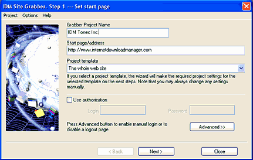

Step 1. Set a start page
On the first step of the wizard you should specify the start page. By default, http protocol is assumed; other protocols like https are required to be specified explicitly. The start page also sets the current site. For example if you specified http://www.tonec.com/support/index.html, the current site would be www.tonec.com with all supported protocols like ftp, https, http applied to this site name.

If a site requires authorization, you should also set login and password on this step. Some sites allow browsing/downloading only after authentication on a certain page. In this case you should press on "Advanced>>" button, check "Enter login and password manually" box, and specify the page to login to the site. Also if the site has a logout button, you should specify here the logout pages that the Grabber should not open. If you set the login page, the Grabber will open a browser window after the fourth step and let you login to the site manually before proceeding with exploring and downloading.
If you plan to save the grabber project for a later use, then you need to choose a unique project name and enter it in "Grabber Project Name" field at the top of the dialog. The project name is shown in the list of saved projects in the categories tree of the main IDM dialog.
If you need to download all pictures, video or audio files from a website, or download a complete web site, you may select the appropriate template in Project template listbox. Project templates make it easy to start your projects quickly, because all required settings are made automatically.
But it's not necessary to select a project template. Project templates make predefined settings in your project for the next steps of grabber wizard. If you download files from web sites with the same Grabber settings, you may choose the "custom" template on this step, make necessary settings on the next stages, and then save the settings as a template by picking "Project->Save current settings as a template" menu item.